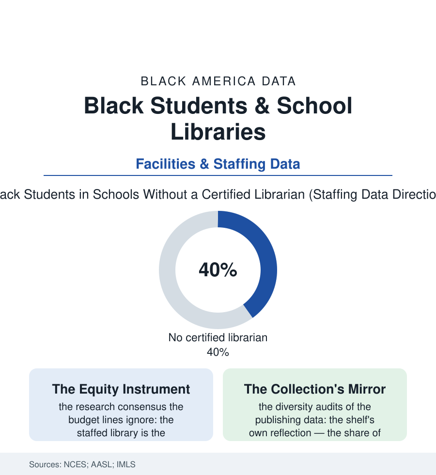

Black Education
The Library File: School Libraries, Librarians, and the Vanishing Den
The school library was the one room that asked nothing and gave everything — and its certified librarians are disappearing first from the schools that hold this file's students. The library file.

Every school in this atlas has rooms with rules, tests, and ledgers. The library had one rule — take the book — and its keeper, the certified school librarian, was the building's only adult whose whole job was a child's curiosity. The staffing data say that adult is vanishing, and vanishing first and fastest from the schools Black children attend. This article reads the library file.
The Vanishing Den
The federal staffing series trace the erosion in plain numbers: the nation's schools have shed roughly a fifth of their full-time-equivalent librarian positions across the recent decades of the Schools and Staffing and successor surveys, the cuts distributed with the budget file's usual aim — the districts serving the most low-income and Black students losing librarians at the highest rates in the state-level studies, their libraries left locked, or staffed by aides and volunteers, or converted to testing centers in the accountability era's repurposing. The research shelf the cuts ignore is unusually consistent: the state library-impact studies (the two-decade series of them, from Colorado forward) find staffed-library effects on reading scores largest precisely in the low-income and minority rows — the librarian as the building's force multiplier for the literacy file's central problem, the professional who knows both the collection and the children. The room's other functions register in the qualitative record the surveys cannot hold: the library as the school's only ungraded refuge (the lunchtime crowd of the readers and the hunted alike — the discipline file's counterweight in carpeted form), the internet's first terminal for the unconnected households of the broadband file in the decades before the laptop programs, the research-skills curriculum whose absence the college file's librarians report meeting, semester after semester, in first-generation freshmen who arrive never having been taught to interrogate a source. The profession's own demographics complete the section's pattern: school librarianship among education's whitest specialties in the workforce data — the Black librarians' associations and the HBCU library-science programs (the field's historic Black graduate pipeline, the Atlanta University school of the golden age) working the representation rows as in every other file.
The Collection and Its Mirror
What stands on the surviving shelves is its own data file: the publishing industry's diversity audits (the Cooperative Children's Book Center's annual count, running since the 1980s) recording the long era in which books by and about Black creators held in the low single digits of new children's titles — the shelf's mirror fogged for the child browsing it — and the recent climb, in the audit data, to the low double digits under the pressure of the same counting (the audit as intervention, the annual number's publication doing the work). The Black publishing shelf of the business file meets the school file here: the independent Black children's publishers and the library-market specialists, the book-fair economy's Black vendors, the diverse-book nonprofits running the donation pipelines into the underfunded libraries the staffing data map — crates of mirrors arriving at schools whose librarian position the district cut, the crate sometimes opened by a volunteer. The fights of the present era over collections — the challenge and removal dockets the library association publishes — land on this file's shelves with their own distribution, the challenged lists' demographics published alongside. The through-line the data support is not subtle, and the file states it once: a population whose literacy is the education section's central emergency is losing, first, the one professional whose specialty is putting the right book into the specific child's hands — and the state studies say the loss prices out, in reading scores, at exactly the addresses where the margin was already thinnest.
Reading the Library Data
The library file is the education section's quiet room and its quietest emergency: no sirens, just a door that opens fewer hours each year, in the buildings that can least afford the quiet. NCES publishes the staffing. The children publish the review that matters — in the holds queue for the book the one librarian, where she still stands, knew to order twice. Keep the door open and the keeper kept: the file asks nothing more, and the budgets keep answering less.
More in Black Education
Black Educational Attainment: High School Parity, the College Gap
About 89 percent of Black adults hold a high school diploma and one in four holds a bachelor's degree or higher — the attainment ladder, the college completion gap, and the generational trend.
Historically Black Colleges and Universities: Enrollment and Degrees
More than 100 HBCUs enroll roughly 290,000 students and award about one in six Black bachelor's degrees — an outsized share from a small sector. The federal education data.
Black College Enrollment: 2.4 Million Students
About 2.4 million Black students are enrolled in American colleges — nearly two-thirds of them women. The NCES enrollment data by sector, level, and trend.
Source: National Center for Education Statistics Schools and Staffing data; American Association of School Librarians; Institute of Museum and Library Services; SLJ school library research.